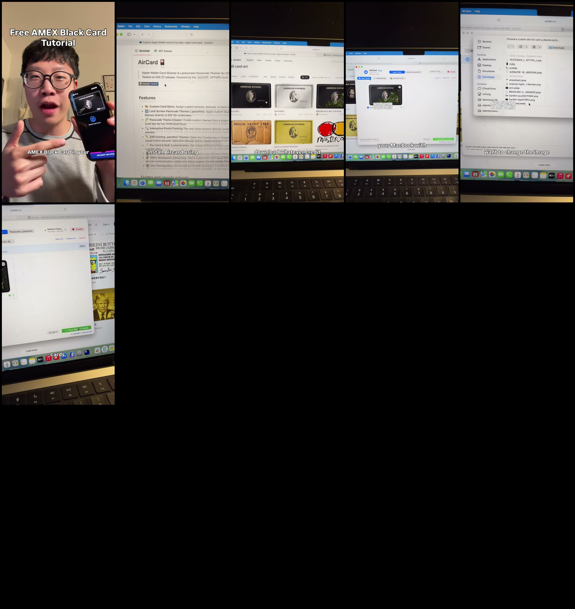

Facebook｜Swagless：AirCard 與 CardArt 的 Apple Wallet 卡面客製流程
一句話摘要
這支 24 秒 Reel 以「Free AMEX Black Card Tutorial」為吸睛標題，實際示範的是第三方 AirCard 與 CardArt 網站的卡面客製流程：在 Mac 的 AirCard 中選擇 Wallet 裡的卡片、挑選或匯入 PNG 圖片，再套用視覺外觀。它不是免費取得 American Express 卡，也不代表 Apple 或發卡行提供變更實體帳戶／權益的功能。
影片可見流程

- 影片先以「Free AMEX Black Card Tutorial」與一張黑色 American Express 風格卡面吸引注意。
- 接著開啟 AirCard 專案頁；畫面描述它為 Apple Wallet Card Skinner，並提到 lock screen passcode theming。
- 影片在 cardart.cc 瀏覽多種卡片圖案，包含 American Express 風格、交通卡與其他品牌主題。
- 在 AirCard 介面中選擇 Wallet 裡的卡片，開啟檔案選擇器匯入圖檔，最後顯示可套用／flash skin 的操作。
CardArt 可查核內容
CardArt 自述為「Apple Wallet card-art gallery for AirCard」，首頁列出三步驟：下載 1536×969 PNG、以 AirCard 匯入到 Wallet 卡片、重新開啟 Wallet 查看卡面。它也明確標示不隸屬 Apple，且卡面著作權屬創作者。
CardArt 首頁的需求條件包含 iOS 18 以上，以及依使用方式採用 Mac、Windows 或 iPhone 版 AirCard；iPhone 路徑對 iOS 18 至 26 提到 pairing file。這些是第三方網站的說明，不是 Apple 官方保證，版本相容性與操作風險應於採用前重新確認。
這不是「免費黑卡」
影片標題容易讓人誤解。畫面可支持的結論僅是：使用者正在替 Wallet 內已存在的卡片調整顯示外觀。卡面圖案不會改變帳戶持有人、信用額度、交易授權、付款網路或發卡行資格。
使用界線與安全提醒
- 只對自己合法持有、可辨識的卡片進行視覺整理；不要使用可能假冒他人、銀行或支付身分的圖案。
- 不要把品牌／銀行卡面截圖當作官方授權素材；留意商標、著作權與發卡行條款。
- 使用第三方工具前，確認其所需的裝置配對、權限與資料處理方式；不要輸入卡號、驗證碼、網銀密碼或其他付款憑證。
- 若卡片在交易、登機、門禁或身分驗證情境中需要清楚辨識，保留原始外觀較安全；不確定時先恢復預設卡面。
原始連結
原始分享連結：https://www.facebook.com/share/r/1DvoyVSyLE/?mibextid=wwXIfr
CardArt：https://cardart.cc/